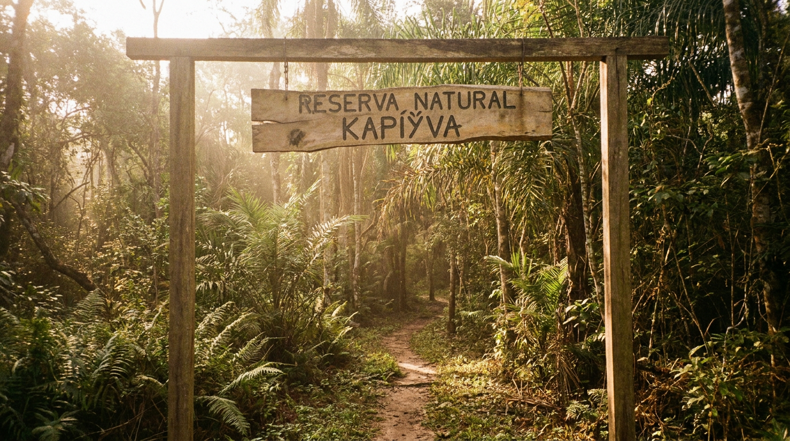
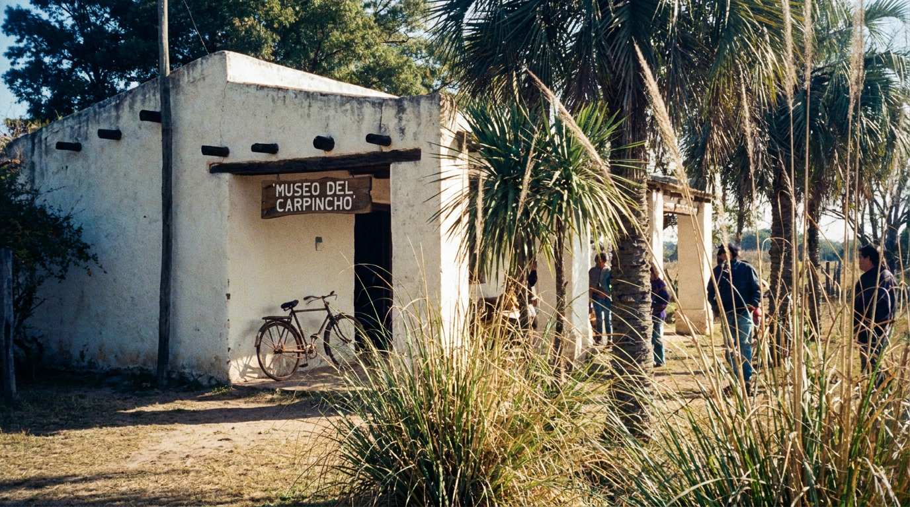
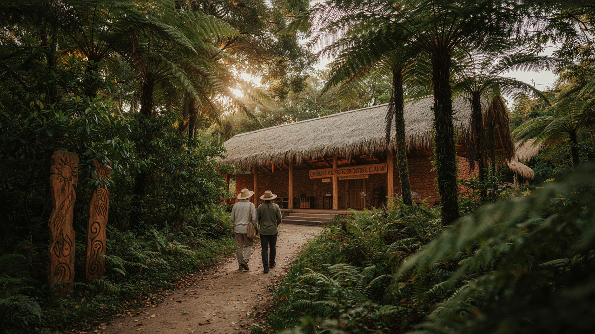
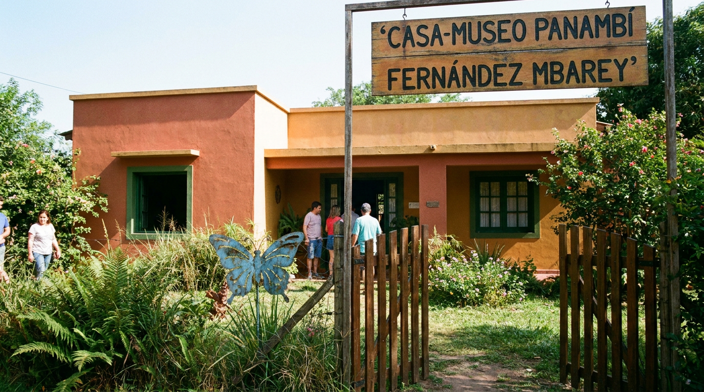
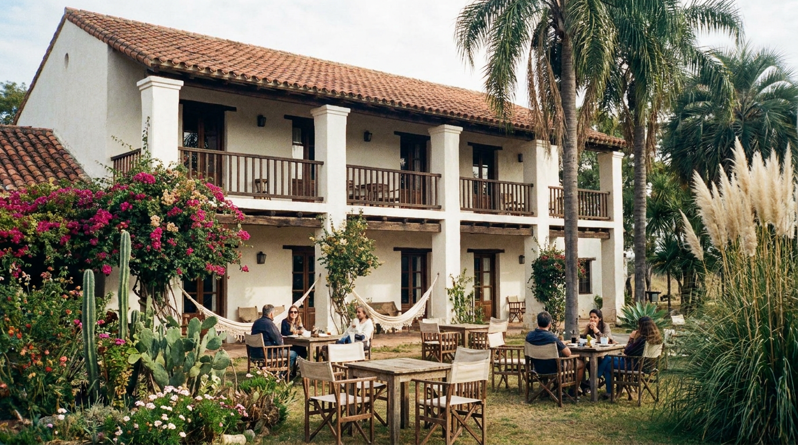
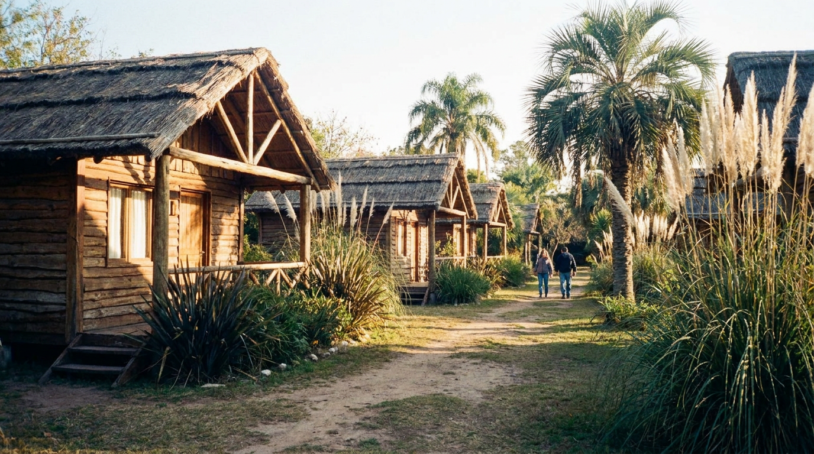

Lugares Turisticos
Táva kapiÿva, conocida como la Ciudad del Carpincho , constituye un destino turístico singular ubicado al norte de los Esteros del Iberá, provincia de Corrientes, Argentina. Esta ciudad integra de manera armoniosa la conservación de la naturaleza, la preservación de la cultura guaraní y el homenaje a la memoria histórica, ofreciendo a los visitantes una experiencia auténtica que refleja la identidad profunda del litoral argentino.
-
Reserva Natural Kapiÿva

Área protegida de 5,000 hectáreas que conserva el ecosistema típico del Iberá: pastizales, cañaverales, lagunas y bosques ribereños. Hogar de carpinchos, yacarés, monos carayá, ciervos de los pantanos y más de 300 especies de aves.
Actividades
- Senderos interpretativos con guías bilingües (español-guaraní)
- Avistaje de fauna al amanecer (6:00 – 8:00hrs)
- Paseos en sulky y cabalgatas por caminos rurales
- Observación de estrellas (19:00 – 21:00hrs)
Información práctica
- Dirección: Calle Yvyrá 217, barrio Anguila, Táva kapiÿva
- Horarios: 6:00 - 16:00hrs y 19:00 - 21:00hrs
- Entrada: $4.500 ARS - entrada gratuita para menores de 12 años, jubilados y personas con discapacidad
- Duración recomendada: 2-3 horas
- Qué llevar: Ropa ligera de manga larga, gorra, repelente, calzado cómodo, binoculares, cámara
-
Museo del Carpincho

Espacio cultural que combina historia natural y cultura guaraní . Exhibe esqueletos, hábitats recreados, leyendas locales, artesanías y gastronomía tradicional. Ideal para comprender el rol del carpincho en el ecosistema del Iberá y en la cosmovisión guaraní.
Salas
- Sala de Historia Natural: Esqueletos, maquetas de hábitats, información sobre biología y comportamiento del carpincho.
- Sala Guaraní: Leyendas sobre el Kapiÿva (espíritu del carpincho), el Pombero, la Luz Mala y otros mitos.
- Sala de Artesanías: Tejidos en fibras naturales (caraguatá, palma), cerámica y cestería.
- Sala Gastronómica: Productos derivados del carpincho y otros platos típicos correntinos.
Información práctica
- Dirección: Imaguare 31, barrio Anguila, Táva kapiÿva
- Horarios: 10:00 - 18:00hrs
- Entrada: $5000 ARS - entrada gratuita para menores de 12 años, jubilados y personas con discapacidad
- Duración recomendada: 1 hora 30 minutos
- Visitas guiadas: Cada hora (español, guaraní, inglés)
-
Centro de Interpretación Guaraní

Espacio vivo dedicado a la preservación y difusión de la lengua, cultura y tradiciones guaraníes. Ofrece talleres, clases de cocina y demostraciones de artesanías.
Actividades
- Talleres de lengua guaraní: Clases básicas para turistas (saludos, números, nombres de animales y plantas).
- Talleres de cocina tradicional: Preparación de chipá, mbejú y dulces de mamón.
- Demostraciones de artesanías: Tejido en caraguatá, cestería en palma, tallado en madera.
Información práctica
- Dirección: Concepción y Taragui 147, barrio Anguila, Táva kapiÿva
- Horarios: Lunes a sábado: 9:00 - 18:00hrs
- Entrada: $9.000 ARS (incluye materiales y degustación)- entrada gratuita para menores de 12 años, jubilados y personas con discapacidad
- Se requiere reservación previa para cada taller
-
Casa-Museo Panambí Fernández Mbarey

Casa donde vivió y escribió la poeta Panambí Fernández Mbarey (1945-1978), desaparecida durante la última dictadura militar. Declarada "Sitio de Memoria y Verdad" en 2015, la casa preserva su obra, su biblioteca personal y su legado como maestra, feminista y militante cultural.
Recorrido
- Sala de entrada: Fotografías, primeras ediciones y reconocimientos póstumos.
- Biblioteca personal: Más de 3,000 volúmenes rescatados del allanamiento de 1978.
- Escritorio de trabajo: Máquina de escribir Olivetti, manuscritos incompletos de "Mujeres del río".
- Sala de Memoria y Verdad: Exhibición documental sobre la dictadura en Corrientes y la búsqueda de justicia.
- Sala de taller: Espacio para escritura creativa.
Actividad
- Taller "escribir para no olvidar" (20 minutos)
Información práctica
- Dirección: Ñande Roga y Bagre 310, barrio Anguila, Táva kapiÿva
- Horarios: Martes a domingo: 9:00 - 18:00hrs / Jueves entrada gratuita para todo el público
- Entrada: $10.000 ARS - entrada gratuita para menores de 12 años, jubilados y personas con discapacidad
- Duración: 1 hora 30 minutos (visita guiada) + 20 minutos (taller opcional)
- Idiomas: Español, Guaraní, Inglés
Dónde alojarse
Hotel Artigas

Hotel boutique de 10 habitaciones ubicado a 30 metros del pueblo
Arquitectura colonial restaurada, desayuno con productos regionales, jardín con plantas nativas
Ideal para familias que buscan comodidad cerca del pueblo
Dirección: Ñande Roga y Zacarías Sena 156, barrio Anguila, Táva kapiÿva
Cabañas "Cactus"

Complejo de 8 cabañas rústicas cada una de 1 ambiente, rodeada de vegetación nativa
Diseño sustentable, energía solar, cerca de la Reserva Natural
Ideal para viajeros eco-conscientes y amantes del senderismo
Dirección: Calle Yvyrá 247, barrio Anguila, Táva kapiÿva
Cabañas "Las Piedras"

Complejo de 5 cabañas independientes de madera, ubicadas a orillas del río
Cada cabaña tiene cocina equipada, deck con vista al agua, sendero privado hacia el río
Ideal para parejas y personas que buscan privacidad y contacto con la naturaleza
Dirección: Imaguare 95, barrio Anguila, Táva kapiÿva
Visitar Táva kapiÿva es más que hacer turismo, es caminar por un territorio donde la naturaleza se respeta, la cultura se celebra y la memoria se construye día a día.